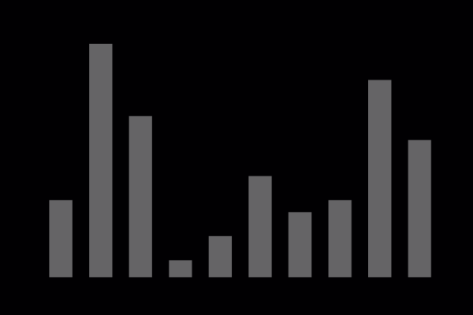

Der Bubblesort...
...gehört zu den vergleichsbasierten Sortieralgorithmen. Er arbeitet in-place und sortiert stabil. Der Bubblesort wird im Alltag kaum eingesetzt, weil es andere Algorithmen mit besseren Laufzeiten gibt. Im Unterricht kommt er jedoch öfter zum Einsatz, da er leicht zu verstehen und zu erklären ist.
Prinzip
In der Bubble-Phase wird die Eingabe-Liste von links nach rechts durchlaufen. Dabei wird in jedem Schritt das aktuelle Element mit dem rechten Nachbarn verglichen. Falls das rechte Element kleiner ist als das aktuelle Element, werden sie getauscht. Bei der absteigenden Sortierung wird getauscht, wenn das rechte Element größer als das aktuelle Element ist. Am Ende der Bubble-Phase steht bei auf- bzw. absteigender Sortierung das größte bzw. kleinste Element der Eingabe am Ende der Liste.
Die Bubble-Phase wird solange wiederholt, bis die Eingabeliste vollständig sortiert ist. Dabei muss das letzte Element des vorherigen Durchlaufs nicht mehr betrachtet werden, da die restlichen zu sortierende Elemente keine größeren bzw. kleineren Elemente mehr enthält.